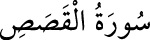

28-EL-KASAS SÛRESİ
Bu sûre Mekke’de nâzil olmuştur ve 88 âyettir.
“Kasas”; olaylar, hikâyeler demektir. İsmini 25. âyetinden almıştır. Sûrede Hz.
Musa’nın çocukluğundan itibaren hayatı ve mücâdeleleri; tevhid ehlinin zaferi ve
dünya servetine güvenilmemesi gibi konular yer almaktadır.